Árbol familiarFamilia Ordovás
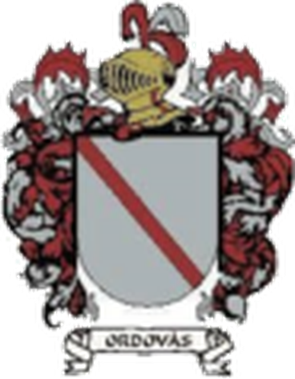
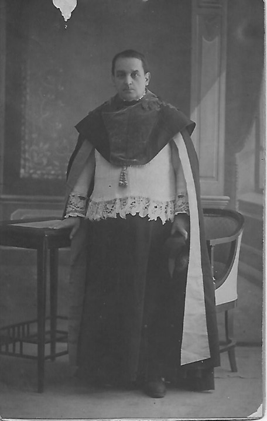
Dolores Galvete Terrén
Manuel de la Peña Azcona
Gila Rosa Gómez (de la Cerda)
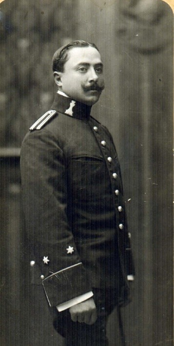
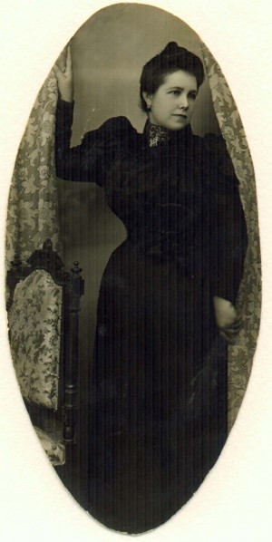
Juan Blasco García
Cayetana Yagüe García
Mariano Yagüe Maluenda
Dolores Arrué Díaz
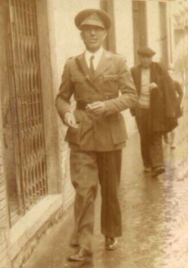
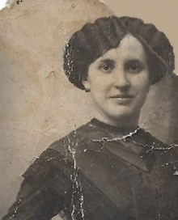
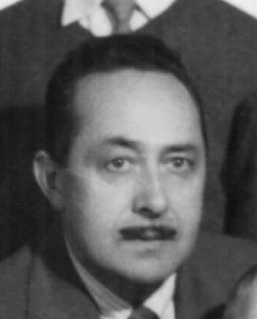

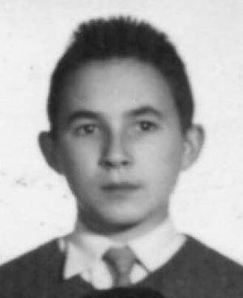
7 may 1943
† 2 dic 2019
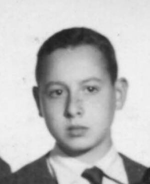
2 nov 1944
† 27 sep 2019
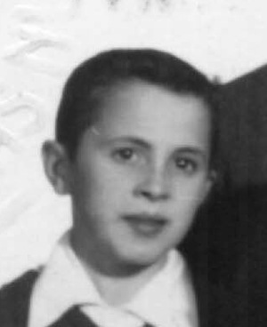
28 nov 1947
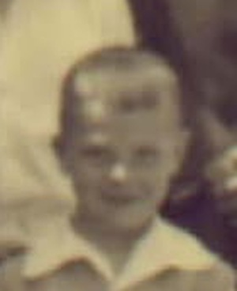
23 nov 1955

18 dic 1957
Matrimonio22 de junio de 1942 · Madrid